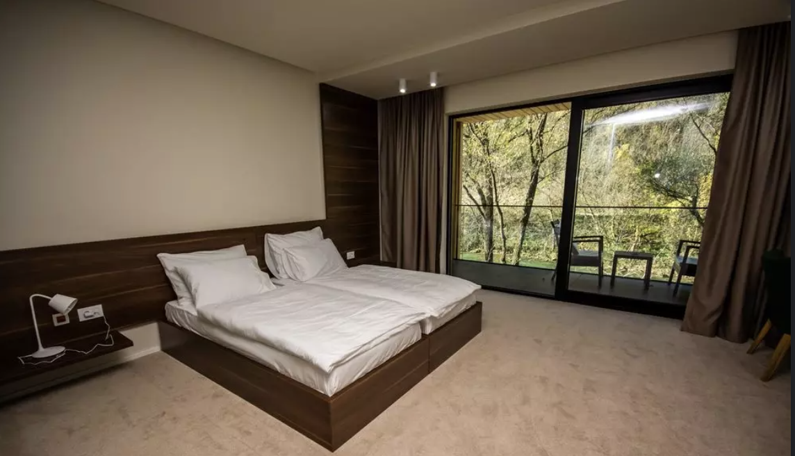
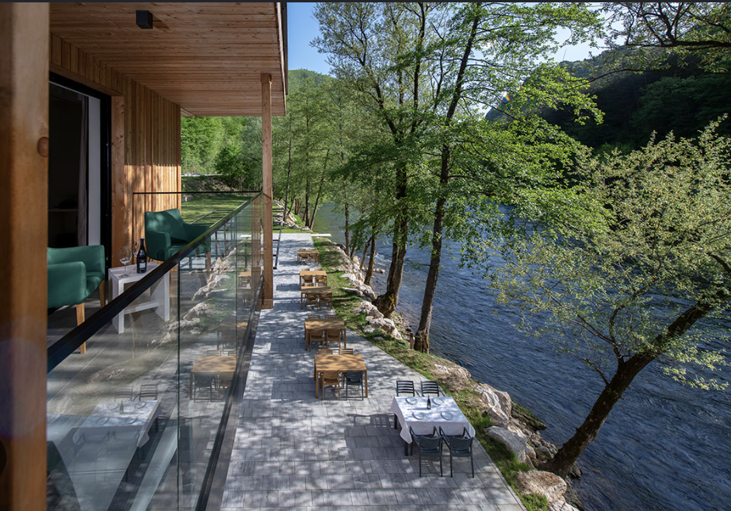
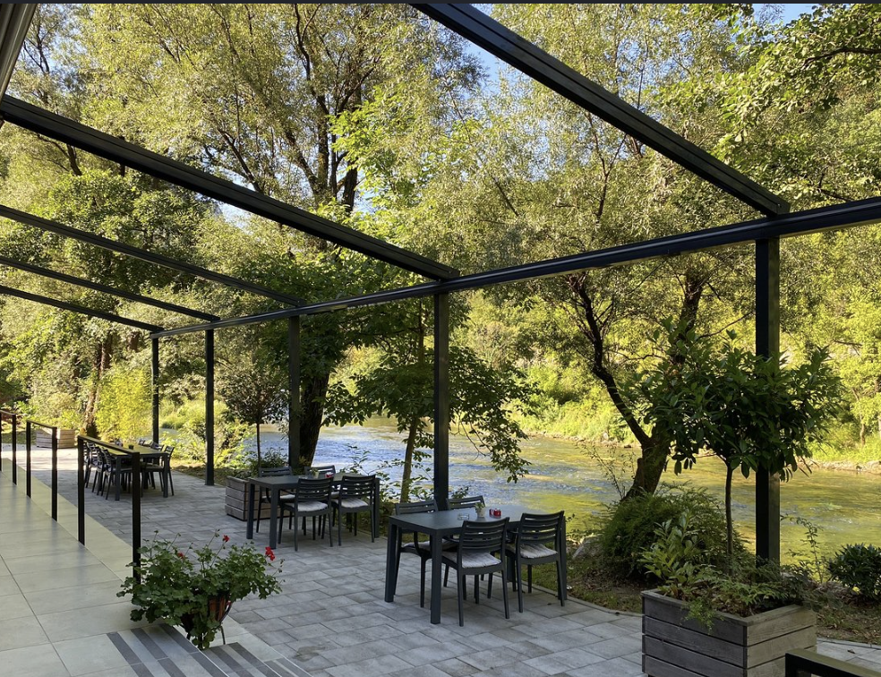
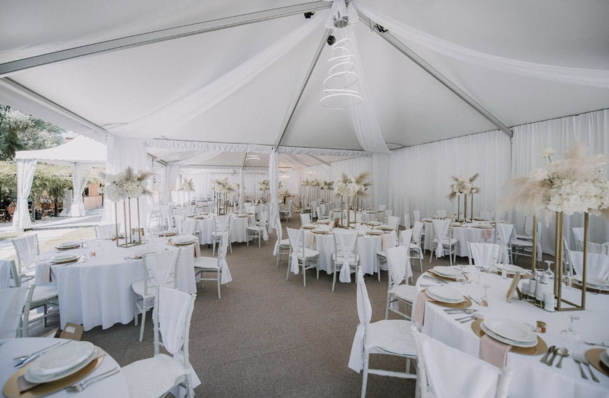

Odmor
u srcu
prirode
Pronađite svoj mir na desnoj obali rijeke Sane. Hotel Kraljevac spaja vrhunski komfor sa netaknutom prirodom, bogatim šumama i jednim od najljepših riječnih revira u Evropi.
O nama
Hotel Kraljevac se nalazi na sjeverozapadu Bosne i Hercegovine, u općini Ključ. Smješten je na desnoj obali rijeke Sane, tačnije u naselju Kraljevac po kojem je i dobio ime. Hotel je počeo sa radom 2017. godine s ciljem promocije turističkih kapaciteta općine Ključ i razvoja ribolovnog turizma. Smješten je na najatraktivnijem dijelu rijeke Sane, u ribolovnom reviru Zmajevac, koji važi za jedan od najatraktivnijih revira za lov na mladicu u Evropi. Prirodni ambijent koji okružuje ovaj moderni objekat sa četiri zvjezdice izuzetno je bogat kako prirodnim ljepotama, tako i historijskim i kulturnim obilježjima ovog dijela Bosne i Hercegovine. Kuhinja hotela Kraljevac pretežno se bazira na modernom pristupu pripremi i konzumaciji hrane. Pored toga, u našoj ponudi su zastupljena tradicionalna bosanska jela, kao i bogat asortiman mediteranske kuhinje. Iz ponude izdvajamo i jela sa roštilja, poput popularnih odrezaka (steak) koje pripremamo od pažljivo odabranih komada mesa. Vrhunska domaća vina upotpunit će ukus svih naših jela pripremljenih sa puno ljubavi i profesionalizma.
Naše usluge
Otkrijte sve sadržaje i pogodnosti koje Hotel Kraljevac nudi svojim gostima.

Smještaj
Odaberite neku od naših jedanaest moderno opremljenih soba s pogledom na rijeku.

Restoran
Uživajte u spoju mediteranske i tradicionalne bosanske kuhinje te vrhunskim vinima.

Terasa uz Sanu
Provedite tople sunčane dane na našoj terasi smještenoj uz prelijepu rijeku Sanu.

Svadbeni salon
Organizujte vaše svadbe, proslave i poslovne događaje u sali do sto mjesta.